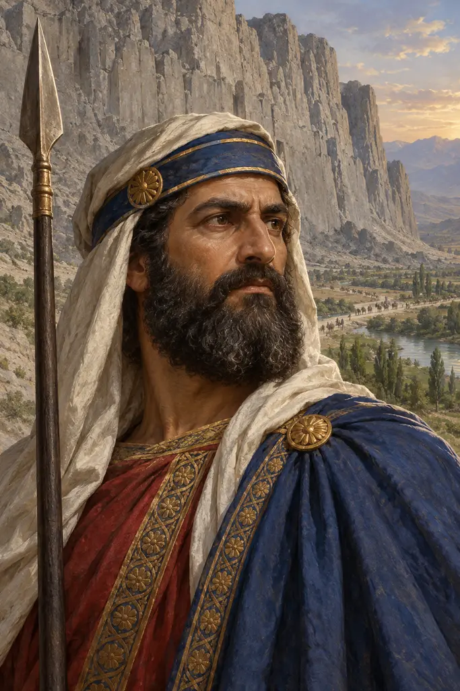
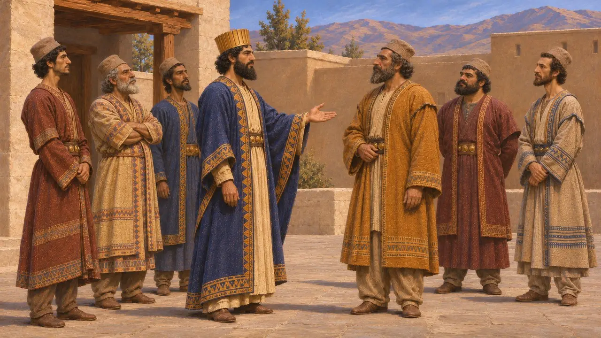
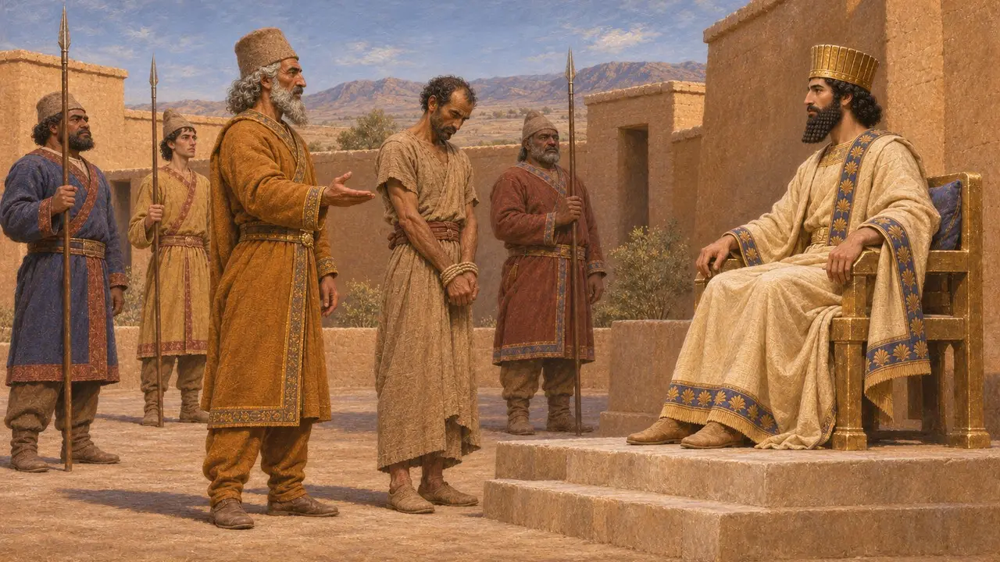
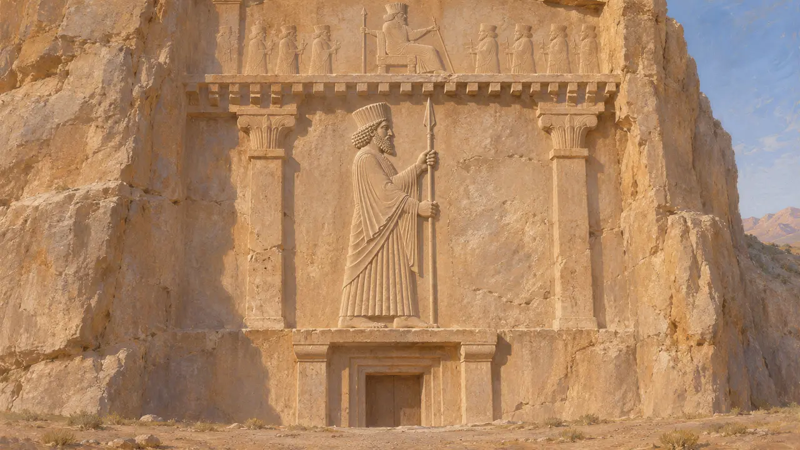
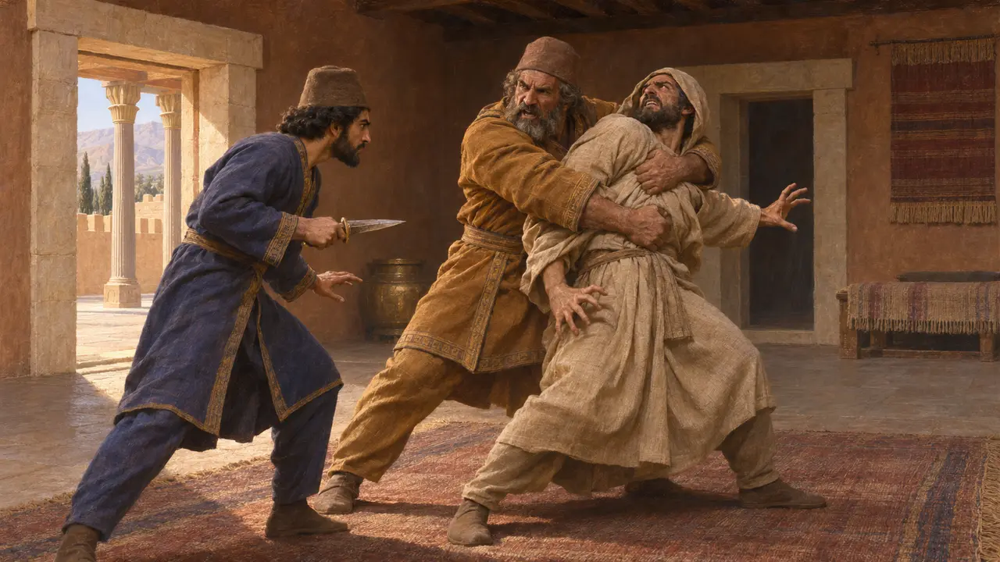
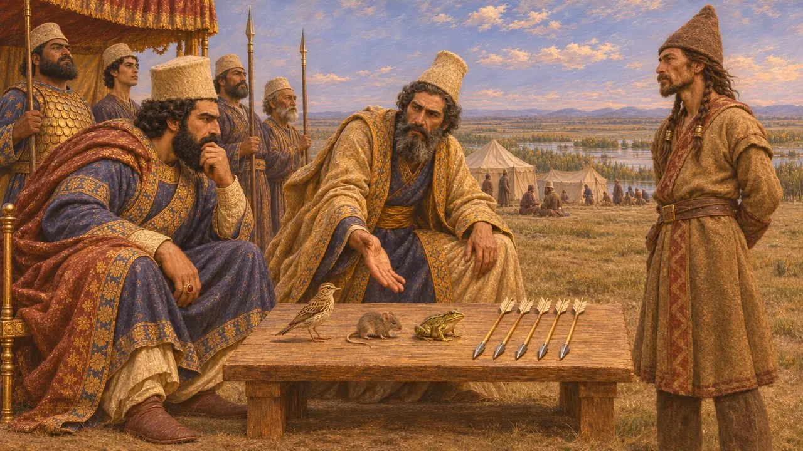

ゴブリュアス(古代ペルシア語ではガウバルヴァ)は、紀元前522年にダレイオスの王位奪取を助けた6人のペルシア貴族の一人である。ダレイオスは碑文に彼の名を記し、エラムの反乱鎮圧に彼を派遣し、さらに自らの墓の正面に彼を槍持ちとして刻ませた。ヘロドトスによれば、二つの婚姻によって彼は王の近親となり、その子マルドニオスはのちにギリシアにおけるペルシアの戦役を指揮した。
ゲームでは： ゲームの年代記の注記は、ゴブリュアスを六人の一人、王と二重の姻戚関係にある人物、そしてエラムの3度目の反乱を鎮めた将軍としている。最初と最後の点はベヒストゥン碑文に、婚姻関係はヘロドトスに由来する。

ダレイオス自らが名を挙げた者
同時代の記録ベヒストゥン碑文でダレイオスは、紀元前522年にマゴスのガウマータと呼ぶ男を討った経緯を語り、のちに自らと共に立った6人の名を挙げている。その中に、マルドゥニヤの子、ペルシア人ガウバルヴァがいる。ダレイオスは後代の王たちにこの協力者たちの一族を守るよう求めており、彼らが新たな宮廷における特権的な集団であったことがわかる。ヘロドトスが伝える謀議者の名簿はやや異なるが、どちらにもゴブリュアスが含まれている。
DB §13, §68-69

エラムでのアタマイタに対する勝利
同時代の記録ベヒストゥンに後から加えられた第五欄は、ダレイオスが王となって2年目から3年目(紀元前520〜519年ごろ)の出来事を記し、エラムがアタマイタという指導者のもとで再び反乱を起こしたと伝える。ダレイオスはゴブリュアスに軍を授けて送った。ゴブリュアスはエラム人を破り、アタマイタを捕らえて王のもとへ連れ帰り、アタマイタは王の命で処刑された。アタマイタは浮彫には現れない。後に捕らえられた者のうち、数珠つなぎにされた反徒の列に加えられたのは、サカの族長スクンカだけである。
DB §71

ナクシェ・ロスタムの槍持ち
同時代の記録ナクシェ・ロスタムにあるダレイオスの磨崖墓の正面には、ある人物をゴブリュアスと記す短い銘文がある。パティシュヴァリシュ氏族のペルシア人にして、ダレイオス王の槍持ちである。この称号は、彼が王の最も信頼する側近の一人であったことを示している。ペルセポリス城砦文書のエラム語粘土板は、おそらくカンバルマという形で彼に言及しており、公務の旅で配給を受け取ったことが記されている。
DNc; Persepolis Fortification tablets

ヘロドトスが語る陰謀と一族
古代の記述ヘロドトスによれば、偽のスメルディスに対する陰謀にゴブリュアスを最初に引き入れたのはオタネスであった。宮殿での戦いで、ゴブリュアスは暗い部屋でマギの一人と組み合い、自分に当たる危険を冒してでも突けとダレイオスに促した。ヘロドトスはさらに、ダレイオスが王となる前にゴブリュアスの娘を娶っていたこと、そしてゴブリュアスがダレイオスの姉妹、すなわちマルドニオスの母を妻としたことを付け加えている。
Herodotus 3.70, 3.78, 7.2, 7.5

スキタイ人の贈り物
後世の伝説ダレイオスがイストロス以北へ遠征した際、ヘロドトスによれば、スキタイ人は鳥、鼠、蛙、そして5本の矢を送ってきた。ダレイオスはこれを降伏のしるしと解したが、ゴブリュアスは警告だと説いた。ペルシア人が空を飛ぶか、地中に潜るか、沼に跳び込むかしない限り、スキタイの矢に倒れるであろう、と。この話はギリシアの謎解き話の型をとっており、真偽を確かめることはできない。
Herodotus 4.131-132
出典
- Darius I, Behistun inscription (DB §13, §68-69, §71)
- Darius I, Naqsh-e Rostam tomb label (DNc)
- Herodotus 3.70-78, 4.131-132, 7.2-5
- P. Briant, From Cyrus to Alexander, 2002
- R. T. Hallock, Persepolis Fortification Tablets, 1969